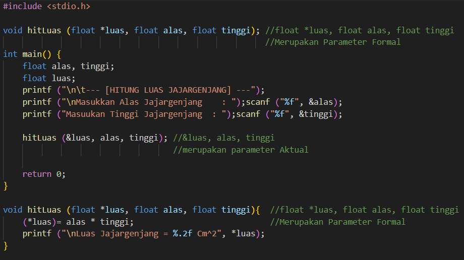

19-06-2024
120k Suka

Prosedur adalah sub program yang berisi alur dan logika untuk menjalankan kode tertentu. Prosedur akan membuat progam bisa membagi tugas-tugasnya sesuai dengan keperluannya dan bisa kita panggil ke main program jika dibutuhkan. Prosedur dapat membantu menghindari pengulangan kode yang panjang dan rumit, sehingga kode lebih efisien dan mudah dibaca.
Contoh Penggunaan Prosedur
Output dari Contoh Penggunaan Prosedur
Prosedur terdiri dari 3 bagian penting, yaitu :
1. Nama Prosedur: Untuk mengidentifikasi dan memanggil prosedur.
2. Parameter: Untuk memberikan input yang digunakan dalam prosedur (opsional).
3. Body: Isi prosedur berupa alur dan logika dari suatu code.
Struktur Prosedur
Pendeklarasian biasanya dilakukan di bagian atas program sebelum main program. Sebuah prosedur akan tetap berjalan meskipun tidak dideklarasikan. Namun, hal tersebut akan memicu warning conflicting types karena program tidak menemukan body dari prosedur terkait saat dieksekusi.
Penggunaan Prosedur Tanpa Pendeklarasian
 Muncul Warning pada Compiler akibat dari Penggunaan Prosedur Tanpa Pendeklarasian
Muncul Warning pada Compiler akibat dari Penggunaan Prosedur Tanpa Pendeklarasian
Maka dari itu, diperlukan pendeklarasian prosedur terlebih dahulu agar tidak terjadi masalah seperti pada gambar 5. Contoh pendeklarasian prosedur yang tepat seperti berikut.
Contoh Pendeklarasian Prosedur yang Tepat
Tidak Muncul Warning pada Compiler Ketika Prosedur Dideklarasikan Terlebih Dahulu
Pendefinisian biasanya dilakukan di bagian bawah program setelah main program. Seperti pada gambar 6. Pada gambar 6, Prosedur tersebut didefinisikan dengan alur code perulangan untuk menghitung luas dari jajargenjang dengan alas dan tinggi yang didapat dari inputan user.
Terdapat beberapa syarat untuk dapat memanggil suatu prosedur, yaitu:
• Nama Prosedur yang dipanggil harus sama dengan nama Prosedur yang telah di deklarasikan dan didefinisikan.
• Jumlah Parameternya harus sama dengan prosedur yang dipanggil.
• Tipe data variabel pada parameter yang ada di main program harus sama dan sesuai dengan penempatannya dengan tipe data variabel pada parameter pada saat prosedur dideklarasikan dan didefinisikan.
• Urutan parameter pada saat pendefinisian dan pemanggilan prosedur harus sama. Jika urutan parameter berbeda maka akan memungkinkan terjadinya error pada saat kompilasi atau program menghasilkan output yang tidak sesuai harapan.
• Jika Parameter ditempel asteris / pointer (*) saat pendeklarasian dan pendefinisian, maka saat pemanggilan di parameter tersebut harus ditempel dengan “&”.
• Nama variabel dalam parameter prosedur pada saat pendefinisian dan pemanggilan pada main program tidak harus sama / boleh berbeda.
Contoh Pemanggilan Prosedur
Parameter merupakan informasi / variabel yang dibutuhkan untuk menjalankan aksi suatu prosedur. Di dalam prosedur, bentuk parameter dapat berupa:
1. Parameter input: merupakan parameter sebagai masukan ke dalam prosedur untuk menjalankan suatu aksi.
2. Parameter output: merupakan parameter di dalam prosedur yang nilainya nanti akan dibawa keluar ke dalam variabel yang ada di main program (memiliki ciri khas, yaitu terdapat pointer / asteris “*” yang menempel pada parameter).
Parameter Input dan Output
Parameter pada prosedur dibedakan menjadi 2 jenis, yaitu parameter Formal dan parameter Aktual. Parameter Formal merupakan jenis parameter yang letaknya berada di luar main program. Parameter Aktual merupakan jenis parameter yang ada di dalam main program pada saat pemanggilan dilakukan. Berikut adalah karakteristik dari Parameter Formal dan Parameter Aktual:
1. Parameter Formal dan Parameter Aktual tidak harus memiliki nama yang sama.
2. Parameter Formal dan Parameter Aktual harus memiliki tipe data yang sama.
3. Jumlah Parameter Aktual dan Parameter Formal harus sama.
4. Urutan Parameter Formal harus sama dengan Parameter Aktual.
 Parameter Aktual dan Formal
1. Naive: Prosedur yang tidak memiliki parameter
 Prosedur Naive
Prosedur Naive
2. Semi-Naive Input: Prosedur yang hanya memiliki parameter input dan akan menghasilkan output yang dikeluarkan melalui Standard Input/Output. Pada kategori prosedur ini, code inputan akan berada di main program, sedangkan code output akan berada di dalam prosedur. Prosedur Semi-Naive Input
3. Semi-Naive Output: Prosedur yang hanya memiliki parameter output dan menggunakan input yang didapat melalui Standard Input/Output. Pada kategori prosedur ini, code inputan akan berada di dalam prosedur, sedangkan code output berada di main program. Prosedur Semi-Naive Output
4. Nett Effect: Prosedur yang menggunakan parameter input dan output. Nett Effect tidak memperbolehkan adanya inputan dan output berbentuk printf atau pun scanf di dalam prosedur (Segala jenis code input & output berada di main program). Prosedur Nett Effect
Prosedur Rekrusif adalah Prosedur yang memanggil dirinya sendiri untuk melakukan perulangan tanpa menggunakan konsep “do-while”, “while”, atau pun “nested loop”. Berikut merupakan contohnya.
 Prosedur Rekrusif
Prosedur Rekrusif
Penggunaan asteris/pointer pada parameter formal dalam suatu prosedur akan membuat nilai variabel pada parameter aktual ikut berubah sesuai dengan nilai dari parameter formal. Jika tidak menggunakan asteris/pointer pada parameter formal, perubahan nilai pada parameter formal selama prosedur dieksekusi tidak akan mempengaruhi parameter aktual. Oleh karena itu, untuk mengubah nilai parameter pada prosedur, wajib menggunakan asteris/pointer pada parameter formal yang ingin diubah datanya.
Prosedur (Bagian 02)
5 Komentar
Komentar Pengguna
Mahasiswa Informatika
19-06-2024Kelvin deodorant
19-06-2024Verdi Tokyo Mokyo
20-06-2024Alfredo Pangsit
20-06-2024Kelvin Majapahit
22-06-2024Verdi Hime
23-06-2024